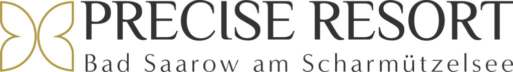
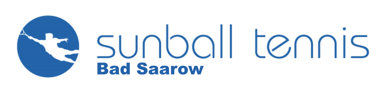
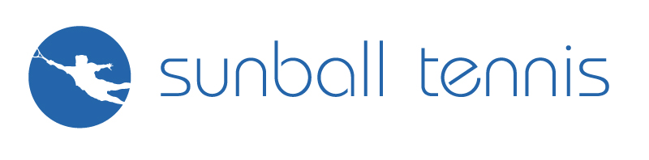
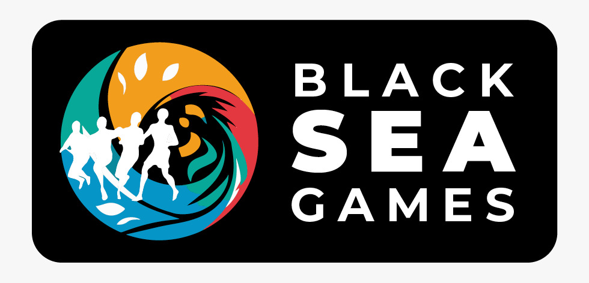
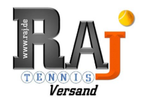

PARTNER / ZUSAMMENARBEIT
Unsere Partner.
Menschen, Marken und Veranstalter, mit denen tennis-schiri.de zusammenarbeitet – die Partnerliste der bisherigen Website, im neuen Design.
DIE PARTNER UNSERER BISHERIGEN WEBSITE
Gemeinsam für den Tennissport.
Die sieben Partner, ihre Original-Logos und die zugehörigen Zieladressen wurden aus der bisherigen Website übernommen.

Precise Resort Bad Saarow
Partnerwebsite besuchen ↗
Sunball Tenniscenter Bad Saarow
Partnerwebsite besuchen ↗
Sunball Tennis
Partnerwebsite besuchen ↗
BLACK SEA GAMES
Partnerwebsite besuchen ↗Junior World Tennis Series (JWTS)
Partnerwebsite besuchen ↗